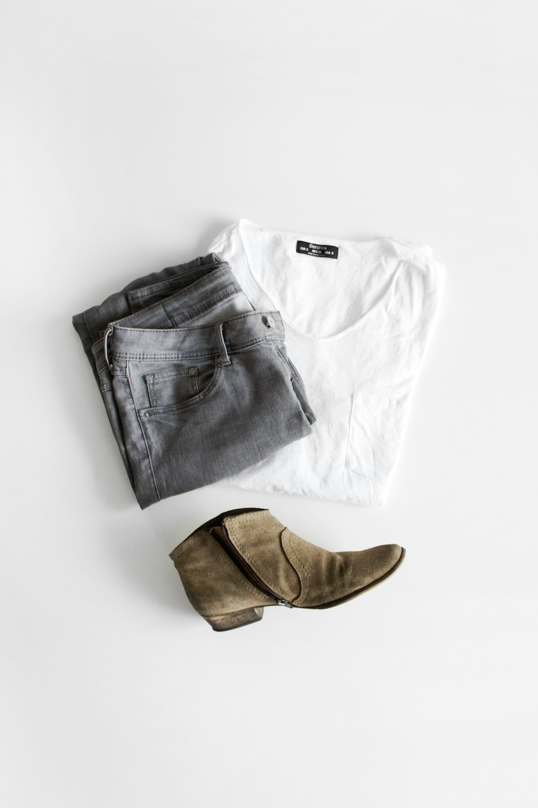

Haute Couture Silk Grading: Tensile Mechanics of Charmeuse, Georgette, and Triple Organza

The Physical Anatomy of the Silk Bave Filament
In the hierarchy of natural textile materials, unbroken filament silk produced by the domesticated silkworm (Bombyx mori) occupies an unassailable apex. The silkworm extrudes two continuous fibroin protein filaments cemented together by an exterior gum called sericin, generating a twin filament structure known as the bave. A single intact cocoon yields an unbroken filament extending up to 1,500 meters in length. When carefully degummed in boiling alkaline soap solutions, the sericin dissolves, leaving behind triangular prisms of pure fibroin protein.
These triangular fibroin prisms act like microscopic optical prisms, refracting incident light at multiple internal angles to generate the peerless liquid pearl iridescence characteristic of haute couture silks. But beyond its optical splendors, silk fibroin possesses extraordinary tensile strength exceeding that of high-tensile steel of equivalent cross-sectional diameter. At BIAS COUTURE X, our master drapers analyze silk not merely as an aesthetic medium, but as an engineered structural composite governed by momme density, yarn twist coefficients, and fiber shear mechanics.
Decoding the Momme Weight System: The Metric of Luxury
While woolens and worsteds are graded by ounces per linear yard and cottons by thread count per square inch, silk textiles are universally classified according to the historical Japanese momme (pronounced 'moe-mee') unit. One momme corresponds precisely to 4.340 grams of silk mass per square meter of surface area. In mass-market fashion, garments labeled '100% silk' frequently utilize insubstantial 10 to 12-momme fabrics that possess fragile tensile thresholds and reveal unsightly underwear seam telegraphing under daylight.
In true haute couture bias construction, light silks lack the gravitational momentum needed to cascade cleanly over the hips. At our 181 Mercer Street salon, we mandate minimum momme thresholds based upon the structural role of the pattern component:
- 19 - 22 Momme Silk Charmeuse: The golden standard for liquid slip gowns and draped cowl necklines. Provides sufficient mass to pull the 45-degree diagonal lattice downward under its own gravity without clinging excessively to static charges.
- 28 - 32 Momme Heavy Silk Crepe de Chine: Features high-twist S-and-Z yarns that deliver a subtle pebble grain texture and high wrinkle recovery, ideal for structural bias daywear and fluid tailoring.
- 40 Momme Silk 4-Ply Crepe: A heavy, opaque architectural textile featuring four plies of twisted silk yarns. It generates deep, sculptured tubular folds reminiscent of classical Greek marble drapery.
Comprehensive Tensile Mechanics Comparison Matrix
| Silk Weave Class | Standard Momme | Filament Twist (TPM) | Young's Modulus (GPa) | Bias Shear Resilience |
|---|---|---|---|---|
| Silk Charmeuse (Lyon) | 22 mm | Low Warp (120 TPM) | 7.8 GPa | High liquid drape; sensitive to abrasion |
| Double Georgette (Como) | 30 mm | High Alternating (2200 TPM) | 5.4 GPa | Outstanding bounce; zero static cling |
| Silk Triple Organza | 16 mm | Zero Twist Flat Ribbon | 11.2 GPa | Crisp structural memory; stable internal stays |
| 4-Ply Silk Crepe (Milan) | 40 mm | Multi-Fold Twisted (850 TPM) | 6.5 GPa | Deep sculptured folds; maximum opacity |
| Silk Chiffon (Paris) | 10 mm | High Crepe Twist (2800 TPM) | 4.1 GPa | Ethereal float; requires multi-layered drape |
Filament Twist Dynamics: The Secret of Georgette Crepe Bounding
The radical difference in tactile hand between a smooth satin charmeuse and a springy crepe georgette originates entirely from yarn twist mechanics. In spinning mills, yarn twist is calibrated in Turns Per Meter (TPM). Low-twist yarns (under 200 TPM) lie parallel and flat, reflecting maximum light to produce the mirror-like sheen of silk charmeuse. However, low-twist yarns offer minimal rotational spring-back when manipulated on the diagonal.
In contrast, silk georgette yarns undergo severe torsional twisting up to 2,800 turns per meter in alternating clockwise (Z) and counter-clockwise (S) directions. When the fabric is woven in a balanced plain weave and immersed in the wet finishing bath, the pent-up torsional kinetic energy in the twisted yarns releases. The yarns attempt to uncoil within the tightly packed weave, creating a micro-buckling effect across the entire surface. This micro-buckling generates thousands of microscopic elastic springs per square centimeter, granting silk georgette an organic mechanical stretch and bounce that straight-grain cottons can never achieve.
Atelier Care & Conservation of High-Momme Silks
Because silk fibroin is an organic protein structure containing eighteen amino acids, it is inherently susceptible to degradation from alkaline chemicals, ultraviolet radiation, and excessive heat. To preserve the heirloom integrity of commissions tailored at 181 Mercer Street, our conservation team recommends strict maintenance parameters:
Never expose high-momme bias garments to domestic washing machines or commercial tumble dryers. Agitation forces wet fibroin filaments to undergo micro-fibrillation, producing a frosty white patina that permanently ruins the textile's deep optical luster. Professional dry cleaning must be conducted exclusively by certified couture conservators utilizing hydrocarbon or liquid silicone solvents rather than aggressive perchloroethylene.
Technical FAQ: Silk Grading & Selection
Silk habotai is a lightweight plain-weave silk (typically 8 to 10 momme) traditionally utilized as pocketing or garment lining. It lacks both the momme density required to produce gravitational drape and the yarn twist required to prevent seam slippage. Under the dynamic tensile pull of bias seams, habotai yarns separate easily, causing permanent seam gapping.
Traditional Lyon weaving mills in France specialize in heavier double-weave crepes and crisp organzas that excel at structural silhouette retention. Mills surrounding Lake Como in Italy are globally renowned for their liquid silk charmeuses and fluid georgettes, which possess a supple, buttery finish unmatched for sensual body-clinging cowl necklines.
The Sericin Degumming Protocol & Italian Water Mineralization
The transformation of raw silk bave into haute couture silk crepe depends intimately upon the chemistry of sericin removal. In raw filament state, sericin constitutes roughly 20% to 25% of the total cocoon mass, acting as a stiff natural lacquer. In mass commercial spinning, aggressive sulfuric acid bath treatments are frequently employed to expedite degumming, which causes microscopic surface pitting and micro-fractures along the delicate fibroin protein chains, diminishing long-term tensile endurance.
In contrast, the historic artisan weaving mills of Lake Como utilize multi-stage alkaline baths enriched with natural mountain glacial water. The unique mineral composition—characterized by balanced calcium and magnesium ionic concentrations—dissolves sericin gently without degrading the interior crystalline fibroin fibrils. This specialized artisanal water chemistry preserves the full elastic yield modulus of the filament, ensuring that when the silk is spun into high-twist georgette yarns, it delivers superior dynamic recovery and fluid drape memory on the cutting table.
About Dr. Beatrice Solal
Dr. Solal holds a doctorate in Polymer & Fiber Science from ENSAIT in Roubaix, France. She directs fabric authentication, filament testing, and European mill partnerships at the BIAS COUTURE X atelier in SoHo, New York.